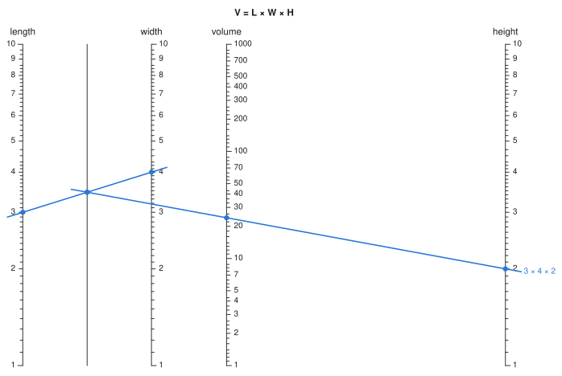
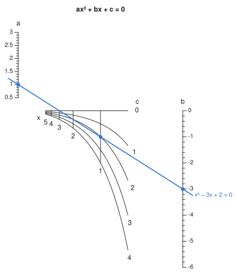

Four or more variables#
One alignment line can relate only three scales. For more variables there are two approaches: chain charts together through a shared scale, or let one point carry two variables at once. auto_nomogram builds chains automatically for formulas that allow them. This page shows how to build either kind by hand.
Chains and pivot lines#
With four variables you need two stages that share an intermediate scale. compound positions the stages so that their copies of the shared scale coincide.
using Nomograms
stage1 = multiplicative_nomogram(
Variable(:L; domain = (1, 10), label = "length"),
Variable(:W; domain = (1, 10), label = "width"),
Variable(:t; label = "", ticks = Float64[]);
width = 40,
)
stage2 = multiplicative_nomogram(
Variable(:t; domain = stage1[:t].domain, label = "", ticks = Float64[]),
Variable(:H; domain = (1, 10), label = "height"),
Variable(:V; label = "volume");
width = 130,
)
box = compound(stage1, stage2; title = "V = L × W × H")
drawing(box; isopleths = isopleth(box; L = 3, W = 4, H = 2, label = "3 × 4 × 2"))
To read the chart, lay a line across the first stage and note where it crosses the shared scale. Then pivot about that point and read the second stage. This is why the shared scale is called the pivot line. An empty tick list draws it bare, as here. If you leave the ticks on, it shows the intermediate value, which is useful when that value means something on its own.
The solver does not work in a fixed direction. It reads any stage with exactly one unknown, adds the answer to the known values, and repeats. So you can give any combination of inputs that closes the chain:
evaluate(box; L = 3, W = 4, V = 24).H2.0A combination that cannot close the chain is refused, with a message naming what stayed unknown. For instance, supplying t, H and V fixes the product L × W but neither factor.
To align the stages, compound applies a similarity (rotation, uniform scaling and translation) that carries the later stage's shared scale onto the one already placed. The match is checked along the whole domain, not only at the two points used to compute it. A similarity is affine, so it cannot change what either stage computes.
The shared scale must be the same scale in both stages
Both stages above are multiplicative, so both place t on a logarithmic scale and the two copies coincide. Splitting V = (L + W) × H the same way would not work. The first stage puts t on a linear scale and the second on a logarithmic one, and moving the stages cannot make those match. compound checks for this and throws an error instead of drawing a wrong chart.
The stages overlap instead of sitting side by side. A parallel-axis construction puts its result between its inputs, so one input of the first stage always lands inside the second. The sizes of the stages decide where it lands. Here the first stage is 40 wide and the second 130, so width falls between the pivot line and volume instead of on top of volume. auto_nomogram chooses the sizes itself, and you can use project to reshape the result if the layout is still awkward.
Grids#
A pivot line works only when the first two variables combine into a single intermediate value. When they do not, one of the three points on an alignment line has to carry two variables at once. That point lies on a Grid: a two-parameter surface (u, v) -> (x, y), drawn as a mesh. This is the grid nomogram of the classic texts. It goes back to d'Ocagne, and Doerfler builds it from determinants (see the Bibliography).
You derive a grid the same way as a curved scale. With a on x = 0 at height f(a) and b on x = 1 at height g(b), a line passes through a grid point exactly when
So any relation that can be written this way, with the coefficients depending only on the two grid variables, has a grid. The general quadratic a·x² + b·x + c = 0, written as a·x² + b·x = -c, has α = x², β = x and γ = -c:
gq = grid_nomogram(
Grid(
Variable(:x; domain = (0.5, 5)),
Variable(:c; domain = (0, 4)),
(x, c) -> (1 / (1 + x), -c / (x * (1 + x))),
),
Variable(:a; domain = (0.5, 3)) => a -> (0.0, a),
Variable(:b; domain = (-6, 0)) => b -> (1.0, b);
relation = (x, c, a, b) -> a * x^2 + b * x + c,
title = "ax² + bx + c = 0",
)
roots = evaluate_all(gq; a = 1, b = -3, c = 2)
drawing(gq; isopleths = [isopleth(gq, roots[1]; label = "x² − 3x + 2 = 0")])
[sol.x for sol in roots]2-element Vector{Float64}:
1.0000000000000009
1.999999999999998What evaluate does depends on which variable is unknown. If both grid variables are known, the grid gives a single point and the problem is an ordinary three-point alignment. If one grid variable is unknown, the two scales already fix the line, and the answer is where it crosses the strand for the known grid variable. That strand is a curve, so the line may cross it twice. Here it does, because a quadratic has two roots.
The mesh is truly two-dimensional only when (α : β : γ) sweeps out a region. If it sweeps out only a curve, the grid collapses onto a line, which means the relation needed a pivot line instead. This is a useful check that you have chosen the right construction.
Strands are scales of kind = :grid, and they are read and drawn like any other scale. Each strand is labelled with its value at the end where its family spreads apart. At the end where the strands converge, the labels would crowd together and get pushed next to the wrong curve. To choose the end yourself, set titleend on the Variable. The family's name goes past the end of that row of values, as an axis title goes past the end of its axis. To make a dense grid less prominent, pass a lighter gridcolor to svg or nomogramplot.